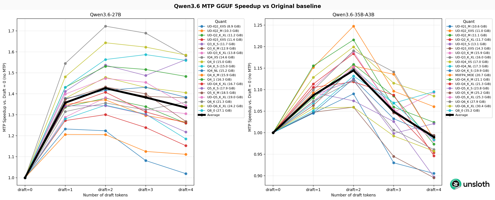
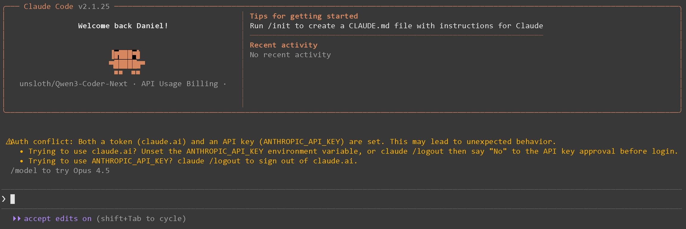
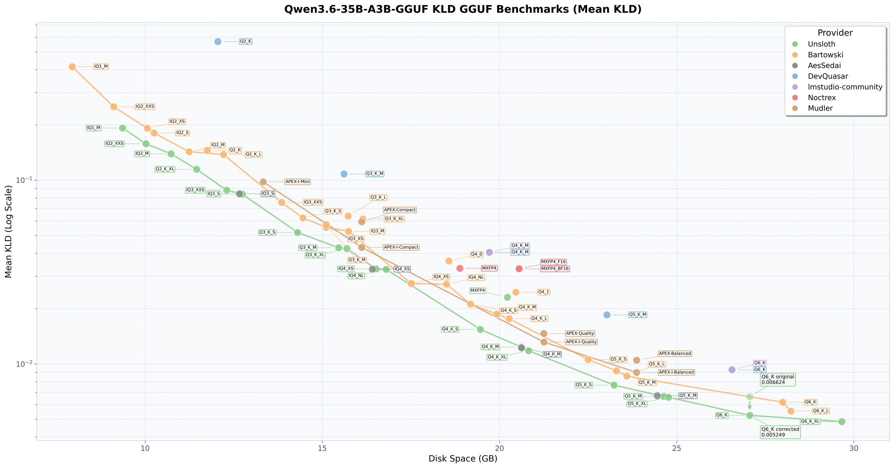
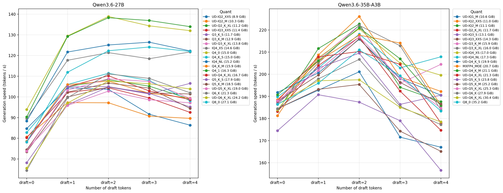
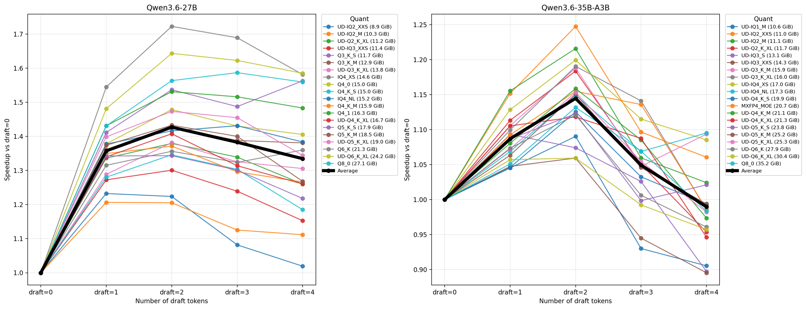
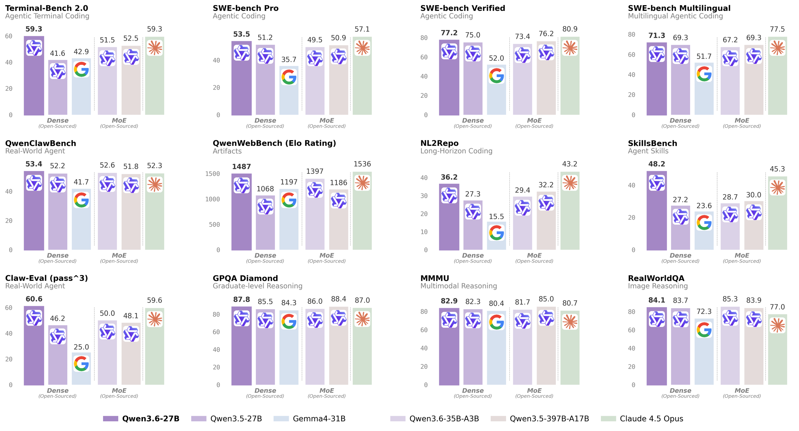

Unsloth에서 공개한 Qwen3.6 로컬 실행 가이드를 원문에 충실하게 번역·정리한 글이다. 원문의 모든 섹션, 코드, 이미지를 포함했다.
Qwen3.6 개요
Qwen3.6은 알리바바의 새로운 멀티모달 하이브리드 사고 모델이다. Qwen3.6-27B와 35B-A3B 두 버전이 있다. 동급 최고 성능, 201개 언어 지원, 256K 컨텍스트를 제공한다. 에이전트 코딩, 비전, 채팅 작업에 뛰어나다.
- Qwen3.6-27B: 18GB RAM에서 실행 가능
- Qwen3.6-35B-A3B: 22GB RAM에서 실행 가능
NEW: Qwen3.6 MTP 출시! MTP는 정확도 손실 없이 1.4~2배 빠른 추론을 가능하게 한다.
Qwen3.6 GGUF 벤치마크도 진행하여 최적의 퀀트 선택에 도움이 되도록 했다.
Qwen3.6 GGUF는 Unsloth Dynamic 2.0 양자화를 사용하여 SOTA 퀀트 성능을 제공한다. 실제 사용 사례 데이터셋으로 보정되고 중요 레이어는 업캐스트된다. Qwen의 day zero access에 감사드린다.
주요 개선사항:
- Developer Role 지원: Codex, OpenCode 등 에이전트 코딩 도구를 위한 developer role 지원
- Tool calling 개선: Qwen3.5와 마찬가지로 중첩 객체 파싱을 개선하여 도구 호출 성공률 향상
⚙️ 하드웨어 요구사항
추론 하드웨어 요구사항 (단위 = 총 메모리: RAM + VRAM, 또는 통합 메모리)
| Qwen3.6 | 3-bit | 4-bit | 6-bit | 8-bit | BF16 |
|---|---|---|---|---|---|
| 27B | 15 GB | 18 GB | 24 GB | 30 GB | 55 GB |
| 35B-A3B | 17 GB | 23 GB | 30 GB | 38 GB | 70 GB |
최고의 성능을 위해 사용 가능한 총 메모리(VRAM + 시스템 RAM)가 다운로드하려는 양자화 모델 파일 크기를 초과해야 한다. 그렇지 않으면 llama.cpp가 SSD/HDD 오프로딩으로 실행할 수 있지만 추론 속도가 느려진다.
⚠️ CUDA 13.2는 사용하지 마세요. 출력이 깨질 수 있다. NVIDIA가 수정 작업 중이다.
Qwen3.6 파인튜닝은 Qwen3.5 파인튜닝 가이드를 참고.
권장 설정
- 최대 컨텍스트 윈도우:
262,144(YaRN으로 1M까지 확장 가능) presence_penalty:0.0 ~ 2.0(기본값은 off, 반복을 줄이려면 사용. 단 높은 값은 성능 약간 저하)- 적절한 출력 길이: 대부분의 쿼리에
32,768토큰
출력이 깨지면 컨텍스트 길이가 너무 낮게 설정되었을 수 있다.
--cache-type-k bf16 --cache-type-v bf16을 시도해볼 것.
Thinking 모드 설정
| 설정 | 일반 작업 | 정밀 코딩 작업 (예: WebDev) |
|---|---|---|
| temperature | 1.0 | 0.6 |
| top_p | 0.95 | 0.95 |
| top_k | 20 | 20 |
| min_p | 0.0 | 0.0 |
| presence_penalty | 1.5 | 0.0 |
| repeat_penalty | 비활성화 또는 1.0 | 비활성화 또는 1.0 |
일반 작업:
temperature=1.0, top_p=0.95, top_k=20, min_p=0.0, presence_penalty=1.5, repetition_penalty=1.0
정밀 코딩 작업:
temperature=0.6, top_p=0.95, top_k=20, min_p=0.0, presence_penalty=0.0, repetition_penalty=1.0
Instruct (non-thinking) 모드 설정
| 설정 | 일반 작업 | 추론 작업 |
|---|---|---|
| temperature | 0.7 | 1.0 |
| top_p | 0.8 | 0.95 |
| top_k | 20 | 20 |
| min_p | 0.0 | 0.0 |
| presence_penalty | 1.5 | 1.5 |
| repeat_penalty | 비활성화 또는 1.0 | 비활성화 또는 1.0 |
일반 작업:
temperature=0.7, top_p=0.8, top_k=20, min_p=0.0, presence_penalty=1.5, repetition_penalty=1.0
추론 작업:
temperature=1.0, top_p=0.95, top_k=20, min_p=0.0, presence_penalty=1.5, repetition_penalty=1.0
Thinking/Reasoning을 비활성화하려면
--chat-template-kwargs '{"enable_thinking":false}'사용. Windows PowerShell에서는:--chat-template-kwargs "{\"enable_thinking\":false}"‘true’와 ‘false’는 상호 교환 가능하다.
⚡ MTP 가이드
MTP(Multi Token Prediction) speculative decoding은 Qwen3.6과 같은 모델에서 정확도 변화 없이 1.42배 빠른 생성을 가능하게 한다. Qwen3.6 27B와 35B-A3B 모두 원래 베이스라인 대비 1.4배 이상의 속도 향상을 보이며, 특히 로컬 모델에 유용하다.
Qwen3.6 27B는 이제 140 토큰/초 생성, Qwen3.6 35B-A3B는 220 토큰/초 생성이 가능하다!
| 모델 | 다운로드 |
|---|---|
| Qwen3.6-27B-MTP-GGUF | HuggingFace |
| Qwen3.6-35B-A3B-MTP-GGUF | HuggingFace |

MTP는 여러 미래 토큰을 예측한 다음, 메인 모델이 병렬로 해당 토큰들을 검증한다. 생성 중 필요한 forward pass 수가 줄어들어 출력이 빨라진다.
Unsloth 실험 결과 --spec-draft-n-max 2 가 가장 잘 작동한다.
Step 1: llama.cpp MTP 브랜치 설치
llama.cpp의 특정 PR 브랜치를 설치해야 한다. (GitHub PR #22673)
GPU가 없거나 CPU 추론만 원하면 -DGGML_CUDA=ON을 -DGGML_CUDA=OFF로 변경. Apple Mac / Metal 장치에서는 -DGGML_CUDA=OFF로 설정 — Metal 지원이 기본 활성화되어 있다.
apt-get install pciutils build-essential cmake curl libcurl4-openssl-dev -y
git clone -b mtp-clean https://github.com/am17an/llama.cpp.git
cmake llama.cpp -B llama.cpp/build -DBUILD_SHARED_LIBS=OFF -DGGML_CUDA=ON
cmake --build llama.cpp/build --config Release -j --clean-first --target llama-cli llama-server
cp llama.cpp/build/bin/llama-* llama.cppStep 2: 모델 실행
: 뒤의 Q4_K_XL은 양자화 타입. export LLAMA_CACHE="folder"로 llama.cpp가 저장할 위치를 지정. 최대 256K 컨텍스트 길이.
MTP Qwen3.6-27B
Thinking 모드 — 일반 작업:
export LLAMA_CACHE="unsloth/Qwen3.6-27B-MTP-GGUF"
./llama.cpp/llama-cli \
-hf unsloth/Qwen3.6-27B-GGUF:UD-Q4_K_XL \
--temp 1.0 \
--top-p 0.95 \
--top-k 20 \
--presence-penalty 1.5 \
--min-p 0.00 \
--spec-type mtp --spec-draft-n-max 2정밀 코딩 작업의 경우: temperature=0.6, presence-penalty=0.0으로 변경.
Non-thinking 모드 — 일반 작업:
export LLAMA_CACHE="unsloth/Qwen3.6-27B-MTP-GGUF"
./llama.cpp/llama-server \
-hf unsloth/Qwen3.6-27B-MTP-GGUF:UD-Q4_K_XL \
--temp 0.7 \
--top-p 0.8 \
--top-k 20 \
--presence-penalty 1.5 \
--min-p 0.00 \
--spec-type mtp --spec-draft-n-max 2 \
--chat-template-kwargs '{"enable_thinking":false}'추론 작업의 경우: temperature=1.0, top-p=0.95로 변경.
MTP Qwen3.6-35B-A3B
Thinking 모드 — 일반 작업:
export LLAMA_CACHE="unsloth/Qwen3.6-35B-A3B-MTP-GGUF"
./llama.cpp/llama-cli \
-hf unsloth/Qwen3.6-35B-A3B-MTP-GGUF:UD-Q4_K_XL \
--temp 1.0 \
--top-p 0.95 \
--top-k 20 \
--presence-penalty 1.5 \
--min-p 0.00 \
--spec-type mtp --spec-draft-n-max 2정밀 코딩 작업의 경우: temperature=0.6, presence-penalty=0.0으로 변경.
Non-thinking 모드 — 일반 작업:
export LLAMA_CACHE="unsloth/Qwen3.6-35B-A3B-MTP-GGUF"
./llama.cpp/llama-server \
-hf unsloth/Qwen3.6-35B-A3B-MTP-GGUF:UD-Q4_K_XL \
--temp 0.7 \
--top-p 0.8 \
--top-k 20 \
--presence-penalty 1.5 \
--min-p 0.00 \
--spec-type mtp --spec-draft-n-max 2 \
--chat-template-kwargs '{"enable_thinking":false}'추론 작업의 경우: temperature=1.0, top-p=0.95로 변경.
Step 3: 모델 다운로드
pip install huggingface_hub hf_transfer
hf download unsloth/Qwen3.6-35B-A3B-MTP-GGUF \
--local-dir unsloth/Qwen3.6-35B-A3B-MTP-GGUF \
--include "*mmproj-F16*" \
--include "*UD-Q4_K_XL*" # 2-bit Dynamic의 경우 "*UD-Q2_K_XL*" 사용Q4_K_M 또는 UD-Q4_K_XL 등 다른 양자화 버전도 선택 가능. 최소 2-bit dynamic quant UD-Q2_K_XL 사용을 권장하여 크기와 정확도의 균형을 맞춘다.
다운로드가 멈추면 Hugging Face Hub, XET debugging 참고.
Step 4: 대화 모드로 실행
./llama.cpp/llama-cli \
--model unsloth/Qwen3.6-35B-A3B-MTP-GGUF/Qwen3.6-35B-A3B-UD-Q4_K_XL.gguf \
--mmproj unsloth/Qwen3.6-35B-A3B-MTP-GGUF/mmproj-F16.gguf \
--temp 1.0 \
--top-p 0.95 \
--min-p 0.00 \
--presence-penalty 1.5 \
--top-k 20🦥 Unsloth Studio 가이드
Qwen3.6은 Unsloth Studio에서 실행하고 파인튜닝할 수 있다. MacOS, Windows, Linux에서 로컬로 모델을 실행할 수 있는 오픈소스 웹 UI이다.
Unsloth Studio 기능
- GGUF 및 safetensor 모델 검색, 다운로드, 실행
- 자가 복구(Self-healing) tool calling + 웹 검색
- 코드 실행 (Python, Bash)
- 자동 추론 파라미터 튜닝 (temp, top-p 등)
- llama.cpp를 통한 빠른 CPU + GPU 추론
- LLM 훈련 VRAM 70% 절감, 2배 빠르게

Step 1: Unsloth 설치
MacOS, Linux, WSL:
curl -fsSL https://unsloth.ai/install.sh | shWindows PowerShell:
irm https://unsloth.ai/install.ps1 | iex설치는 약 20초 ~ 1분 소요.
Step 2: Unsloth 실행
MacOS, Linux, WSL, Windows 공통:
unsloth studio -H 0.0.0.0 -p 8888브라우저에서 http://127.0.0.1:8888 열기.
Step 3: Qwen3.6 검색 및 다운로드
첫 실행 시 계정 보호용 비밀번호 생성 후 간단한 온보딩 마법사가 나타난다. 언제든 건너뛸 수 있다.
Studio Chat 탭에서 Qwen3.6을 검색하여 원하는 모델과 퀀트를 다운로드.
Step 4: Qwen3.6 실행
Unsloth Studio에서 추론 파라미터가 자동 설정되지만 수동으로 변경할 수도 있다. 컨텍스트 길이, 채팅 템플릿 등도 편집 가능.
아래는 2-bit Qwen3.6 GGUF가 30+ tool call, 20개 사이트 검색, Python 코드 실행을 수행한 예시:
🦙 Llama.cpp 가이드
Dynamic 4-bit를 사용하며, 24GB RAM / Mac 장치에서 빠른 추론에 적합하다. 모델이 풀 F16 기준 약 72GB이므로 성능에 크게 걱정할 필요 없다.
Unsloth GGUF 컬렉션 참고.
Step 1: llama.cpp 빌드
apt-get update
apt-get install pciutils build-essential cmake curl libcurl4-openssl-dev -y
git clone https://github.com/ggml-org/llama.cpp
cmake llama.cpp -B llama.cpp/build \
-DBUILD_SHARED_LIBS=OFF -DGGML_CUDA=ON
cmake --build llama.cpp/build --config Release -j --clean-first --target llama-cli llama-mtmd-cli llama-server llama-gguf-split
cp llama.cpp/build/bin/llama-* llama.cppGPU가 없으면 -DGGML_CUDA=OFF로 설정. Apple Mac에서는 -DGGML_CUDA=OFF 후 기본 Metal 지원 사용.
Step 2: 모델 실행
Qwen3.6-27B
Thinking 모드 — 일반 작업:
export LLAMA_CACHE="unsloth/Qwen3.6-27B-GGUF"
./llama.cpp/llama-cli \
-hf unsloth/Qwen3.6-27B-GGUF:UD-Q4_K_XL \
--temp 1.0 \
--top-p 0.95 \
--top-k 20 \
--presence-penalty 1.5 \
--min-p 0.00정밀 코딩: temperature=0.6, presence-penalty=0.0
Non-thinking 모드 — 일반 작업:
export LLAMA_CACHE="unsloth/Qwen3.6-27B-GGUF"
./llama.cpp/llama-server \
-hf unsloth/Qwen3.6-27B-GGUF:UD-Q4_K_XL \
--temp 0.7 \
--top-p 0.8 \
--top-k 20 \
--presence-penalty 1.5 \
--min-p 0.00 \
--chat-template-kwargs '{"enable_thinking":false}'추론 작업: temperature=1.0, top-p=0.95
Qwen3.6-35B-A3B
Thinking 모드 — 일반 작업:
export LLAMA_CACHE="unsloth/Qwen3.6-35B-A3B-GGUF"
./llama.cpp/llama-cli \
-hf unsloth/Qwen3.6-35B-A3B-GGUF:UD-Q4_K_XL \
--temp 1.0 \
--top-p 0.95 \
--top-k 20 \
--presence-penalty 1.5 \
--min-p 0.00정밀 코딩: temperature=0.6, presence-penalty=0.0
Non-thinking 모드 — 일반 작업:
export LLAMA_CACHE="unsloth/Qwen3.6-35B-A3B-GGUF"
./llama.cpp/llama-server \
-hf unsloth/Qwen3.6-35B-A3B-GGUF:UD-Q4_K_XL \
--temp 0.7 \
--top-p 0.8 \
--top-k 20 \
--presence-penalty 1.5 \
--min-p 0.00 \
--chat-template-kwargs '{"enable_thinking":false}'추론 작업: temperature=1.0, top-p=0.95
Step 3: 모델 다운로드
pip install huggingface_hub hf_transfer
hf download unsloth/Qwen3.6-35B-A3B-GGUF \
--local-dir unsloth/Qwen3.6-35B-A3B-GGUF \
--include "*mmproj-F16*" \
--include "*UD-Q4_K_XL*" # 2-bit Dynamic의 경우 "*UD-Q2_K_XL*" 사용Step 4: 대화 모드로 실행
./llama.cpp/llama-cli \
--model unsloth/Qwen3.6-35B-A3B-GGUF/Qwen3.6-35B-A3B-UD-Q4_K_XL.gguf \
--mmproj unsloth/Qwen3.6-35B-A3B-GGUF/mmproj-F16.gguf \
--temp 1.0 \
--top-p 0.95 \
--min-p 0.00 \
--presence-penalty 1.5 \
--top-k 20Llama-server & OpenAI 호환 API
프로덕션 배포를 위해 llama-server를 사용:
./llama.cpp/llama-server \
--model unsloth/Qwen3.6-35B-A3B-GGUF/Qwen3.6-35B-A3B-UD-Q4_K_XL.gguf \
--mmproj unsloth/Qwen3.6-35B-A3B-GGUF/mmproj-F16.gguf \
--alias "unsloth/Qwen3.6-35B-A3B" \
--temp 0.6 \
--top-p 0.95 \
--ctx-size 16384 \
--top-k 20 \
--min-p 0.00 \
--port 8001새 터미널에서 pip install openai 후:
from openai import OpenAI
import json
openai_client = OpenAI(
base_url = "http://127.0.0.1:8001/v1",
api_key = "sk-no-key-required",
)
completion = openai_client.chat.completions.create(
model = "unsloth/Qwen3.6-35B-A3B",
messages = [{"role": "user", "content": "Create a Snake game."},],
)
print(completion.choices[0].message.content)🍎 MLX Dynamic Quants
MacOS 장치를 위한 dynamic Qwen3.6 4-bit 및 8-bit 퀀트도 업로드했다.
Qwen3.6-27B MLX: 3-bit · 4-bit · MXFP4 · NVFP4 · 6-bit · 8-bit
Qwen3.6-35B-A3B MLX: 3-bit · 4-bit · 8-bit
실행:
curl -fsSL https://raw.githubusercontent.com/unslothai/unsloth/refs/heads/main/scripts/install_qwen3_6_mlx.sh | sh
source ~/.unsloth/unsloth_qwen3_6_mlx/bin/activate
python -m mlx_vlm.chat --model unsloth/Qwen3.6-27B-UD-MLX-4bit💡 Thinking: 켜기/끄기 + Preserve Thinking
Qwen3.6은 Preserve Thinking을 지원한다. 이전 대화의 thinking trace를 유지하는 기능으로, 토큰 사용량은 증가하지만 연속 대화에서 정확도를 높일 수 있다.
Preserve Thinking 활성화
--chat-template-kwargs '{"preserve_thinking":true}'Thinking 켜기/끄기
| OS | Thinking 켜기 | Thinking 끄기 |
|---|---|---|
| Linux, MacOS, WSL | --chat-template-kwargs '{"enable_thinking":true}' | --chat-template-kwargs '{"enable_thinking":false}' |
| Windows PowerShell | --chat-template-kwargs "{\"enable_thinking\":true}" | --chat-template-kwargs "{\"enable_thinking\":false}" |
예시: Preserve Thinking 활성화
./llama.cpp/llama-server \
--model unsloth/Qwen3.6-35B-A3B-GGUF/Qwen3.6-35B-A3B-BF16.gguf \
--alias "unsloth/Qwen3.6-35B-A3B-GGUF" \
--temp 0.6 \
--top-p 0.95 \
--top-k 20 \
--min-p 0.00 \
--port 8001 \
--chat-template-kwargs '{"preserve_thinking":true}'Python에서 reasoning_content 접근:
from openai import OpenAI
import json
openai_client = OpenAI(
base_url = "http://127.0.0.1:8001/v1",
api_key = "sk-no-key-required",
)
completion = openai_client.chat.completions.create(
model = "unsloth/Qwen3.6-35B-A3B-GGUF",
messages = [{"role": "user", "content": "What is 2+2?"},],
)
print(completion.choices[0].message.content)
print(completion.choices[0].message.reasoning_content)👨💻 OpenAI Codex & Claude Code 연동
로컬 코딩 에이전트 워크로드로 모델을 실행하려면 Unsloth의 Claude Code 가이드를 따르면 된다. 모델 이름을 Qwen3.6 버전으로 변경하고 올바른 파라미터를 사용하면 된다.

📊 벤치마크
Unsloth GGUF 벤치마크
Qwen3.6-35-A3B GGUF에 대해 Mean KL Divergence 벤치마크를 진행했다.
- KL Divergence는 거의 모든 Unsloth GGUF를 SOTA Pareto frontier에 배치
- KLD는 양자화된 모델이 원본 BF16 출력 분산과 얼마나 일치하는지를 나타낸다
- Unsloth가 22개 크기 중 21개에서 최고 성능
- Q6_K만 Dynamic 레이어를 위해 업데이트되었고 새로운
UD-IQ4_NL_XL퀀트를 도입

MTP 벤치마크
27B와 35B MoE용 새 퀀트를 벤치마크했다. 일반적으로 dense 모델이 MoE 모델보다 MTP로 더 많이 가속된다 (dense: 1.42x vs MoE: 1.151.25x).
Qwen3.6 27B는 UD-Q2_K_XL로 140 토큰/초, Qwen3.6 35B-A3B는 220 토큰/초 생성! 일부 throughput 수치는 노이즈가 있어 일부 퀀트가 다른 것보다 느린 것으로 보일 수 있다.

평균 속도 향상은 draft tokens = 2에서 dense 모델이 1.4x, MoE가 약 1.15~1.2x.

2개 이상의 draft token은 권장하지 않는다. 4 draft tokens에서 수용률(acceptance rate)이 83%에서 50%로 급격히 떨어지며, MTP forward pass의 이점이 줄어든다.
공식 Qwen 벤치마크
Qwen3.6-27B

Qwen3.6-35B-A3B

참고사항
presence_penalty는 0.0~2.0 사이에서 조정. 기본은 off. 반복을 줄이지만 높은 값은 성능을 약간 저하시킨다.- 현재 Qwen3.6 GGUF는 별도의 mmproj 비전 파일 때문에 Ollama에서 작동하지 않는다. llama.cpp 호환 백엔드를 사용할 것.
- 출력이 깨지면
--cache-type-k bf16 --cache-type-v bf16을 시도. - Qwen3.6 파인튜닝은 Qwen3.5 파인튜닝 가이드를 참고.
링크
- 원문: unsloth.ai/docs/models/qwen3.6
- GGUF 컬렉션: huggingface.co/collections/unsloth/qwen36
- MTP llama.cpp PR: github.com/ggml-org/llama.cpp/pull/22673
- Qwen3.6-27B-MTP-GGUF: HuggingFace
- Qwen3.6-35B-A3B-MTP-GGUF: HuggingFace
- Unsloth Studio: unsloth.ai/docs/new/studio
- Claude Code 가이드: unsloth.ai/docs/basics/claude-code